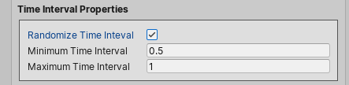

Tweaking The Waterfall Simulation¶
The waterfall system can interact with multiple water systems it overlaps, disturbing their surfaces and creating ripples.
We tweak the waterfall simulation in the waterfall component inspector.
Tip
We can use the simulation mode to quickly and easily tweak and test the waterfall system simulation properties, in realtime, right in the edit mode without the need to switch to play mode. All we need to do is to press the Enter Simulation Mode button.
Affected Water Objects¶
We can set which water object(s) the waterfall can interact with, by tweaking the Water Objects List property.
For each water object:
We specify the minimum and the maximum disturbance the waterfall could apply to its surface.
The Spread property controls the weight of the disturbance. Setting this property to 1 (full weight), the waterfall disturbs all the water surface vertices it overlaps.
The Smooth Ripples controls whether or not to disturb a water surface vertex neighbors. We tweak the slider to control the amount of disturbance to apply to the neighbor vertices.
Script Reference
1 2 3 4 5 6 7 8 9 10 11 12 13 14 15 16 | |
Time Interval Properties¶

We could specify a fixed time interval, or just provide the minimum and the maximum time intervals and let the waterfall system pick a random time interval.
Script Reference
1 2 3 4 | |
Continue Creating Ripples When Off-Screen Property¶
The Continue creating ripples when off-screen property controls whether or not the waterfall system keeps creating ripples even when the waterfall object is not visible to any camera.
Script Reference
1 | |